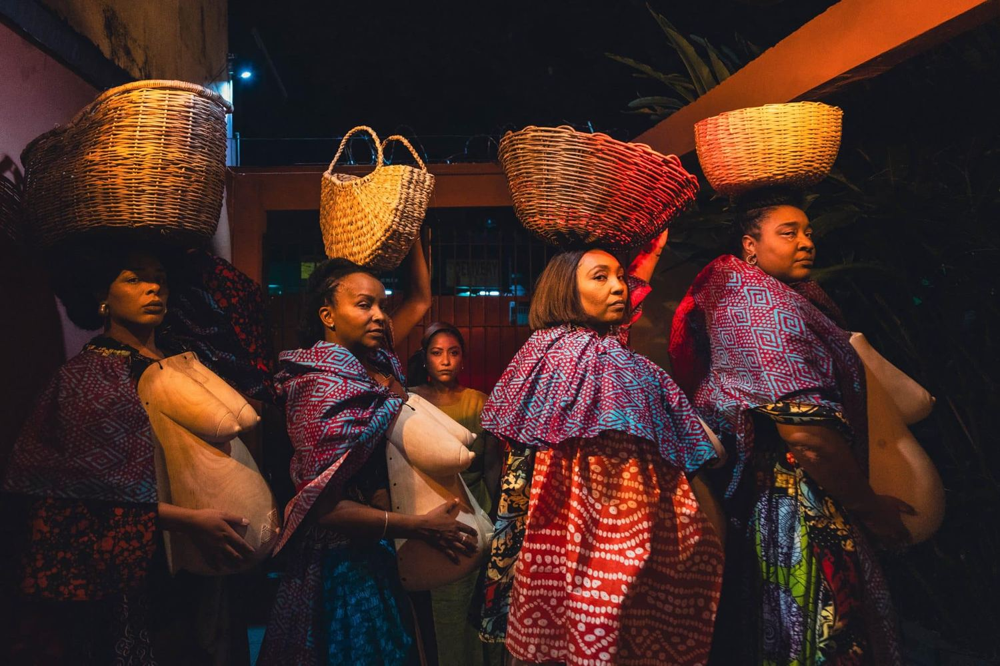
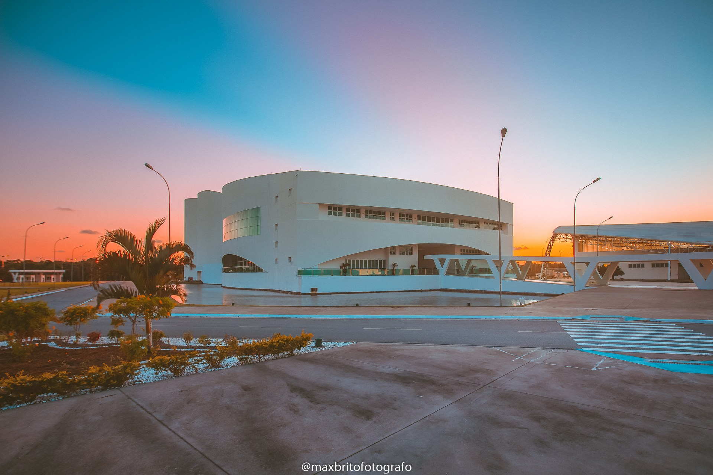
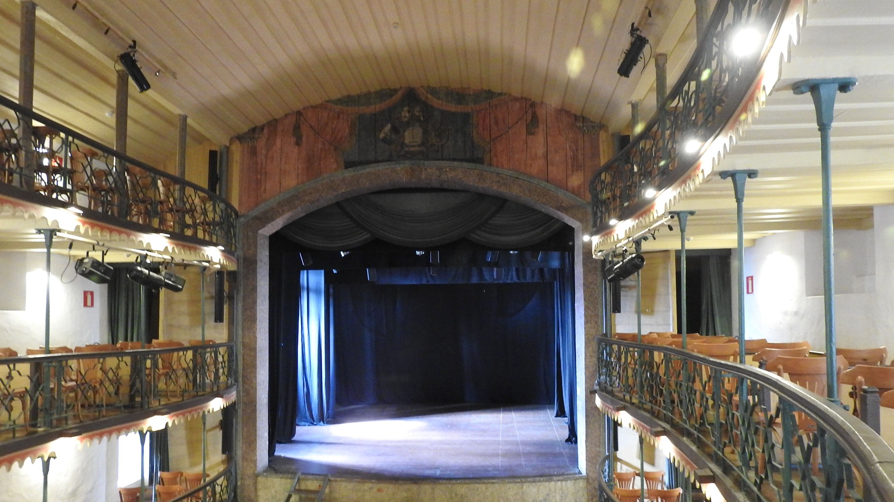

Foto: Noelia Nájera/DivulgaçãoCapulanas põe o ventre em cena
Nesta edição
- 3O tamanho da salaEditorial
- 4Cinco ventres de madeira no palco do ArenaA semana · Teatro
- 9Recortes: o que disseram na semanaEntre aspas
- 10Divine volta a Nova York meio século depoisA semana · Teatro
- 13Barretão media o cinema brasileiro pelo placarA semana · Cinema
- 19Na tela: os programas da semanaYouTube do FOYER
- 20Dois terços das salas do país, um título sóA semana · Cinema
- 25A taxa de conveniência que não voltavaA semana · Notícia
- 281770, o ano em que a sala abriu e nunca mais fechouA semana · Teatro
- 34A semana em cartaz: São PauloAgenda
- 35A semana em cartaz: Rio de JaneiroAgenda
- 36Entre mestres: a arte pela palavraExclusivo
- 37Página patrocinadaPublicidade
- 38ExpedienteQuem faz o FOYER
- 39A cortina desceContracapa
O tamanho da sala
O Brasil fechou 2025 com 3.554 salas de cinema em operação, recorde histórico registrado pela Ancine. Na quarta-feira 29 de julho, mais de 2.500 dessas salas entraram na programação de um único título, Homem-Aranha: Um Novo Dia. No fim de semana seguinte, os cinemas do país venderam 5,22 milhões de ingressos, o melhor resultado em 36 meses, e 4,24 milhões deles foram para esse mesmo filme.
Luiz Carlos Barreto passou seis décadas discutindo exatamente essa conta. O fotógrafo de Vidas Secas e produtor de Dona Flor e Seus Dois Maridos, morto em 22 de julho aos 98 anos, sustentava que filme brasileiro volta com bilheteria quando tem tela e campanha, e repetia até o fim o placar dos anos da Embrafilme: 42% da receita das bilheterias do país. Esta edição reconta a trajetória dele e destrincha o que a cota de tela obriga hoje, sessão por sessão.
No teatro, a semana correu por outra estrada. Em São Paulo, a Capulanas Cia de Arte Negra encerra no Teatro de Arena Eugênio Kusnet uma circulação inteira bancada pelo Fomento ao Teatro, sem cobrar ingresso, e Leona Cavalli se despede de Elogio da Loucura de graça na CAIXA Cultural. Em Ouro Preto, uma sala inaugurada em 1770 segue aberta à visitação por R$ 5. Em Nova York, Eureka O'Hara se prepara para ser Divine meio século depois de o ícone drag ter conquistado a cidade. Casa cheia, mostrou esta semana, se mede de mais de um jeito. Boa leitura.
A direção do FOYER
 TeatroFoto — Noelia Nájera
TeatroFoto — Noelia NájeraCinco ventres de madeira no palco do Arena
A Capulanas Cia de Arte Negra cumpre de 5 a 9 de agosto de 2026, no Teatro de Arena Eugênio Kusnet, a última etapa da circulação de No Baile de Osá Meji Faço das Tripas o Meu Coração, com entrada gratuita e ingressos pela Sympla.
Uma mulher negra gesta um espetáculo dentro do próprio ventre, e quem conduz o parto é Milagros, médica afro-cubana. Entre consultas, memórias de família e encontros com ancestrais, a montagem dirigida por Olaegbé recolhe fragmentos de uma história coletiva de mulheres, com ventres de madeira esculpidos a partir de um encontro com o artista beninense Barthélémy Hountchonou e figurino de saiotes empilhados de capulanas.
No Baile de Osá Meji Faço das Tripas o Meu Coração, montagem da Capulanas Cia de Arte Negra dirigida por Olaegbé, cumpre de 5 a 9 de agosto a última etapa de sua circulação no Teatro de Arena Eugênio Kusnet, na Vila Buarque. A entrada é gratuita, com ingressos pela plataforma Sympla. São cinco apresentações, de quarta a sábado às 20h e no domingo às 19h. A peça tem 80 minutos e classificação indicativa de 12 anos.
Cinco ventres de madeira no palco do Arena
A peça acompanha Capulanas, mulher negra que gesta um espetáculo dentro do próprio ventre. Quem a orienta é Milagros, médica afro-cubana. A travessia entre consultas, memórias de família e encontros com ancestrais vai reunindo fragmentos de uma história coletiva de mulheres. Maternidade, violência obstétrica, apagamento histórico e resistência cultural são os assuntos da dramaturgia, assinada por Olaegbé ao lado das demais integrantes do grupo. Em cena, Adriana Paixão, Débora Marçal, Flávia Rosa, Sol Tereza e Beatriz Oliveira dividem o palco com figuras como Tia Ma Monserrat, Maria Júlia Figueiredo, Eleiê, Exu, Oshum, Oyá e Osá.
O ventre no centro da cena
O título remete ao odu Osá Meji. A direção explicou a escolha no material de divulgação da montagem, distribuído pela assessoria Canal Aberto Comunicação.
"Escolhemos bailar para o odu Osá Meji para lembrar às mulheres negras da importância do cuidado com a própria saúde, especialmente em relação às doenças ligadas ao ventre, ao útero, às pernas e às partes sanguíneas do corpo. Durante a pesquisa, percebemos a necessidade de incentivar essa comunidade a realizar exames e, ao mesmo tempo, fortalecer sua conexão com a ancestralidade", afirma Olaegbé, diretora do espetáculo.
A personagem que conduz o parto condensa esses dois planos. "Ela é uma doutora do SUS e, ao mesmo tempo, um grande pássaro destinado a cuidar daquela barriga", diz Olaegbé sobre Milagros, no mesmo material. "Ao realizar esse parto, Capulanas entra em contato com mulheres que enfrentaram situações como a violência obstétrica ou o diagnóstico precoce da retirada do útero."
Cinco ventres de madeira no palco do Arena
Os ventres de madeira que as atrizes vestem em cena vieram de um encontro da companhia com o artista beninense Barthélémy Hountchonou, reconhecido pelo trabalho na escultura de máscaras. O figurino, concebido por Débora Marçal, empilha saiotes feitos com capulanas, o tecido estampado de uso corrente em países africanos. A montagem dialoga com o Gẹ̀lẹ̀dẹ̀, dança ritual do povo iorubá presente na Nigéria, no Benin e no Togo, dedicada às mães ancestrais. Na trilha, referências do Candomblé e da Santeria convivem com guitarras e samplers. A direção musical é de Mauricio Badé. Ele a executa ao vivo com Renato Ihu, Rubi Assunção e Maicou Yuri.
Uma casa, um terreiro e um teatro
A temporada integra o projeto A Casa, o Terreiro e o Teatro, contemplado pela 44ª edição do Programa Municipal de Fomento ao Teatro para a Cidade de São Paulo. Os três espaços do título são literais. A circulação começou em 3 de julho na Goma Capulanas, sede da companhia no Jardim São Luís, criada em 2012 como polo de criação e formação na zona sul. Entre 17 e 26 de julho, passou pelo Terreiro Ilê Axê Dará Omo Ofá Bebê, no Balneário Dom Carlos. Termina agora no Kusnet, onde a arquitetura circular aproxima atrizes e espectadores.
Circulação gratuita bancada por fomento público tem sido o caminho de grupos paulistanos com pesquisa longa e pouco acesso ao circuito comercial. Foi assim que a Cia. Os Crespos levou dois espetáculos a seis cidades de São Paulo e que O Território do Samba fez temporada no Espaço Cia. da Revista.
Cinco ventres de madeira no palco do Arena
A casa que recebe a última etapa
Na história registrada pela Funarte, que mantém a casa entre seus espaços culturais, o teatro foi fundado em 1955 por José Renato. A partir de 1958, o elenco se especializou em montar dramaturgos brasileiros, entre eles Augusto Boal, Gianfrancesco Guarnieri e Vianinha. Ali estrearam Eles Não Usam Black-Tie, de Guarnieri, e Arena Conta Zumbi, de Guarnieri e Boal com música de Edu Lobo. Em 1977, o prédio foi comprado pelo Serviço Nacional de Teatro, órgão então vinculado ao Ministério da Educação e Cultura e depois incorporado à Funarte. A sala de espetáculos leva o nome de Augusto Boal, e o andar superior abriga um espaço expositivo, a Sala Umberto Magnani. O mesmo palco recebeu a estreia de Killer Queen, da Cia Bromio Atos Culturais.
De Solano Trindade ao Osá Meji
A Capulanas Cia de Arte Negra é um coletivo de teatro negro feminino fundado em 2007 na zona sul de São Paulo por Adriana Paixão, Débora Marçal, Flávia Rosa e Priscila Obaci. Começou com Solano Trindade e suas Negras Poesias, em cartaz de 2007 a 2009. Depois foi ampliando a pesquisa. Veio Pé no Quintal, de 2010, voltado aos territórios periféricos; o intercâmbio Pé no Quintal de Moçambique, em 2012, feito com artistas africanos; e Sangoma, saúde às mulheres negras, que pôs o tema em diálogo com saberes ancestrais e contemporâneos. Vieram depois Sã da Cura ao Gozo, de 2014, e Ialodês, Trilogia da Mulher Negra: uma ficção afrofuturista, de 2016.
Cinco ventres de madeira no palco do Arena
Outro endereço da cena negra paulistana fica aberto no mesmo período. Entre 6 e 16 de agosto, As Armas Milagrosas reestreia no Itaú Cultural, também em temporada gratuita, com um grupo de funcionários negros que interrompe o ensaio de uma comédia de Pirandello para narrar a própria história.
Serviço
No Baile de Osá Meji Faço das Tripas o Meu Coração
Teatro de Arena Eugênio Kusnet, Rua Dr. Teodoro Baima, 94, Vila Buarque, São Paulo
Dias 5, 6, 7, 8 e 9 de agosto de 2026
De quarta a sábado, às 20h; domingo, às 19h
80 minutos. Classificação indicativa: 12 anos
Gratuito, com ingressos pela plataforma Sympla
Com tradução e interpretação em Libras (Mirian Caxilé, Assessoria em Acessibilidade)
Recortes da semana
 TeatroFoto — Eureka O’Hara durante a RuPaul’s…
TeatroFoto — Eureka O’Hara durante a RuPaul’s…Divine volta a Nova York meio século depois
Eureka O'Hara, de RuPaul's Drag Race e da série We're Here, foi anunciada em 5 de agosto de 2026 como protagonista de Divine: Beyond the Flamingos!, solo escrito e dirigido por Donnie que estreia em 3 de dezembro no Marjorie S. Deane Little Theater.
A peça se passa no início de março de 1988, no apartamento de Harris Glenn Milstead. O voo para Hollywood parte em duas horas, um papel masculino em Married... with Children espera do outro lado, e Divine acaba de convidar amigos para uma noite de conversa. São 90 minutos em que cabem John Waters, o cinema underground, os clubes e a música pop.
Estrela de RuPaul’s Drag Race estreia no teatro nova-iorquino em Divine: Beyond the Flamingos!, peça que encontra Harris Glenn Milstead às vésperas de uma virada na carreira
Divine vai voltar ao palco de Nova York 50 anos depois de ter conquistado a cidade em Women Behind Bars. Desta vez, quem veste as perucas, os saltos e a insolência do ícone drag é Eureka O’Hara, conhecida por RuPaul’s Drag Race e pela série We’re Here, da HBO.
Divine volta a Nova York meio século depois
Eureka foi anunciada nesta quarta-feira, 5 de agosto, como protagonista de Divine: Beyond the Flamingos!, solo escrito e dirigido por Donnie. A estreia mundial terá temporada limitada de seis semanas no Marjorie S. Deane Little Theater, no West Side YMCA, de 3 de dezembro a 17 de janeiro. A abertura oficial está marcada para 8 de dezembro.
A montagem também marca a estreia da artista nos palcos de Nova York.
Antes de Hollywood
A peça se passa no início de março de 1988, no apartamento de Harris Glenn Milstead, nome por trás de Divine. Prestes a viajar para Hollywood, ele arruma as malas para assumir um papel masculino em Married… with Children — a oportunidade que esperava para ser reconhecido também fora da persona que havia atravessado o cinema underground, os clubes e a música pop.
Só há um problema: o voo parte em duas horas, e Divine convidou amigos para uma noite de conversa e festa.
O espetáculo transforma esse intervalo numa passagem de 90 minutos pela vida do artista. Entram em cena a parceria com John Waters, os filmes que escandalizaram plateias, a carreira musical e o caminho que levou um jovem perseguido em Baltimore a se tornar uma das figuras mais radicais da cultura queer.
Divine morreu em 7 de março de 1988, aos 42 anos, pouco depois de ser escalado para a série.
Uma escalação com história
Para Eureka, o papel não chega por acaso. Em 2020, ela integrou uma remontagem de Women Behind Bars, interpretando a carcereira que Divine havia vivido no teatro em 1976. Também encarnou a estrela em RuPaul’s Drag Race All Stars.
Divine volta a Nova York meio século depois
“Divine mudou o curso da história drag”, afirmou Eureka no anúncio. A artista disse que a trajetória de Harris Glenn Milstead abriu caminho para que outras gerações imaginassem a drag para além dos clubes — na televisão, no cinema e nos palcos.
Donnie, fundador da triangle productions!, chama atenção para a coincidência histórica: a estreia acontece exatamente meio século depois da passagem de Divine por Women Behind Bars em Nova York. A nova peça, porém, não quer apenas reproduzir uma imagem conhecida. Procura o homem de voz baixa por trás da criatura que fez do excesso uma forma de liberdade.
 CinemaFoto — Produção Cultural no Brasil
CinemaFoto — Produção Cultural no BrasilBarretão media o cinema brasileiro pelo placar
Luiz Carlos Barreto morreu em 22 de julho de 2026, aos 98 anos, no Rio de Janeiro. Fotógrafo de Vidas Secas, produtor de Dona Flor e Seus Dois Maridos e articulador da Lei do Audiovisual, defendeu por seis décadas que o filme brasileiro pode ocupar a própria tela.
Da revista O Cruzeiro ao Congresso Nacional, ele fez quase todos os ofícios do cinema brasileiro: fotografia, roteiro, produção, distribuição e articulação política. A linha que atravessa a obra inteira, porém, é o dinheiro. Dona Flor vendeu 10,735 milhões de ingressos e ficou 34 anos como a maior bilheteria nacional, feito que a produtora comprou anúncio na Rede Globo para conquistar.
Luiz Carlos Barreto morreu na madrugada de quarta-feira, 22 de julho, aos 98 anos, no Hospital Copa Star, no Rio de Janeiro, em decorrência de uma infecção pulmonar agravada por pneumonia. O velório foi na manhã seguinte, no Palácio da Cidade, em Botafogo, e a cremação, restrita à família, no Memorial do Carmo, no Caju.
Barretão, como o meio o chamava, fez quase todos os ofícios do cinema brasileiro: fotografia, roteiro, produção, distribuição e articulação política. Mas a linha que atravessa as seis décadas de trabalho dele é o dinheiro. Barreto passou a vida defendendo uma tese teimosa: filme brasileiro pode ocupar a própria tela e voltar com bilheteria.
Barretão media o cinema brasileiro pelo placar
Do fotojornalismo para o set
Nascido em Sobral, no interior do Ceará, em 20 de maio de 1928, chegou ao cinema pela porta do jornalismo. Foi repórter fotográfico da revista O Cruzeiro, onde se tornou um dos nomes fortes do fotojornalismo brasileiro. Em 1961, cobrindo para a revista as filmagens de Barravento, primeiro longa de Glauber Rocha, no litoral baiano, decidiu trocar de lado da câmera.
A entrada efetiva veio como roteirista, ao lado de Roberto Farias, em O Assalto ao Trem Pagador (1962). No ano seguinte assinou a fotografia de Vidas Secas, de Nelson Pereira dos Santos, que levou o prêmio da crítica no Festival de Cannes de 1964. Segundo o Tela Viva, Barreto eliminou os filtros que a produção brasileira herdara dos estúdios Vera Cruz e registrou a luz dura do sertão, num método que resumia na frase "sombra é sombra, luz é luz". O filme rodou com orçamento de 18 milhões de cruzeiros.
Em 15 de julho de 1963 nascia a L.C. Barreto Produções Cinematográficas, aberta com a mulher e sócia Lucy Barreto, conforme registra o site da própria produtora. Barreto também fundou a Difilm, distribuidora que juntou diretores do Cinema Novo sob a mesma estrutura. Quem controla a distribuição decide em quantas salas o filme entra.
Barretão media o cinema brasileiro pelo placar
Dona Flor e 34 anos de recorde
O salto de escala veio em 1976, com Dona Flor e Seus Dois Maridos, dirigido pelo filho Bruno Barreto a partir do romance de Jorge Amado. O filme vendeu 10,735 milhões de ingressos e foi, durante 34 anos, a maior bilheteria do cinema brasileiro, segundo a L.C. Barreto. Para chegar lá, a produtora comprou anúncios na Rede Globo, decisão de marketing incomum para um título nacional naquela altura.
Barreto gostava de contar o resultado pelo placar.
"Dona Flor e seus dois maridos (1976) foi um filme revolucionário no mercado. Batemos Tubarão, do Spielberg", afirmou em entrevista ao Correio Braziliense, em 2023.
Para ele, aquilo era argumento de negociação: mostrava a exibidores e distribuidores que o filme brasileiro ganhava do estrangeiro dentro de casa, desde que tivesse tela e campanha.
De onde vinha o dinheiro
Nos anos 1970 e 1980, quem bancava o setor era a Embrafilme, a estatal que centralizava o financiamento do cinema no país. Barreto influenciou diretamente as decisões da empresa, negociando recursos públicos enquanto se posicionava como opositor do regime militar, conta o Tela Viva. Dali saíram coproduções como Bye Bye Brasil, de Cacá Diegues, e Memórias do Cárcere, de Nelson Pereira dos Santos. Naquele período, o cinema brasileiro chegou a 42% da receita total de bilheterias do país.
Barretão media o cinema brasileiro pelo placar
Em 1990, a Embrafilme foi extinta. As linhas de fomento pararam, os estúdios pararam junto e a L.C. Barreto passou a distribuir títulos estrangeiros para se manter de pé. Barreto mudou de endereço: virou presença fixa no Congresso Nacional, negociando com parlamentares de partidos diferentes.
Dessa articulação saiu a Lei do Audiovisual, de 1993, que permitiu abater imposto de renda de quem investisse em produção de cinema. É prima da Lei Rouanet na engrenagem da renúncia fiscal, e foi o mecanismo que destravou a Retomada. Os dois primeiros certificados de captação emitidos pela nova lei foram da produtora dele.
A conta que nem sempre fechou
Com dinheiro privado incentivado, os orçamentos subiram. Vieram as duas indicações ao Oscar de melhor filme estrangeiro, com dois dos filhos na direção: O Quatrilho, de Fábio Barreto, e O Que é Isso, Companheiro?, de Bruno Barreto. Vieram também Bossa Nova e Flores Raras.
O retorno de bilheteria, porém, oscilou feio. Entre 1995 e 2008, a empresa captou R$ 52 milhões em verbas de renúncia fiscal para rodar doze filmes, segundo o Tela Viva. Os doze somaram cerca de 4 milhões de espectadores no total, e o produtor teve de recorrer a empréstimos bancários para segurar a estrutura. É uma média de pouco mais de 330 mil espectadores por filme, com custo fixo de produtora grande em cima.
Em Lula, o Filho do Brasil (2009), Barreto colocou R$ 4 milhões do próprio bolso num orçamento planejado de R$ 13 milhões e impôs a estreia em mais de 500 salas simultâneas, negociando pacotes de mídia com exibidores e distribuidores. O lançamento coincidiu com o acidente de carro que deixou o diretor, Fábio Barreto, em coma até a morte, em 2019.
Barretão media o cinema brasileiro pelo placar
O número que ele repetia
Nos últimos anos, Barreto participou dos debates de consolidação do Fundo Setorial do Audiovisual e fundou a Amazônika, voltada a animação em 3D. Seu acervo fotográfico foi destinado ao Instituto Moreira Salles. E ele continuou martelando a mesma conta.
"A luta toda do cinema brasileiro foi o de conquistar o seu próprio mercado. Isso foi conseguido na época da Embrafilme. Chegamos a alcançar 42% do mercado", disse ao Correio Braziliense em 2023, antes de completar: "Hoje, não temos nem 1%. Isto é um escândalo."
O "nem 1%" era força de expressão. Naquele mesmo 2023, o Observatório Brasileiro do Cinema e do Audiovisual, ligado à Ancine, registrou 3,3% do público para filmes brasileiros. Os números não medem a mesma coisa: os 42% da era Embrafilme se referem à receita das bilheterias, e o índice de hoje mede fatia de público. O diagnóstico de fundo, esse, continua de pé. Em 2026, já com a Cota de Tela em vigor, a participação nacional no público é de 6,5%, contra 10,1% em 2024 e 9,9% em 2025, segundo a Ancine.
Na nota que divulgou sobre a morte, publicada na íntegra pela CNN Brasil, a família definiu o que o setor perdeu.
"O país perdeu Barretão. É o mesmo que dizer: o cinema brasileiro perdeu um de seus arquitetos, o mais apaixonado de todos", diz o texto.
Barretão media o cinema brasileiro pelo placar
Arquiteto é a palavra certa. Barreto entendeu cedo que estética sem distribuição não vira mercado e que mercado sem política pública não se sustenta. Ele morreu com essa conta aberta: mesmo com cota de tela e fundo setorial, o filme brasileiro não chega a um décimo do público que compra ingresso no país.
Na tela
 Programa do FoyerCom Tiago Barbosa Ópera do Malandro Programa do Foyer
Programa do FoyerCom Tiago Barbosa Ópera do Malandro Programa do Foyer Programa do FoyerCom Guilherme Uzeda e Henrique Benjamin Forever Young Programa do Foyer
Programa do FoyerCom Guilherme Uzeda e Henrique Benjamin Forever Young Programa do Foyer Programa do FoyerCom Larissa da Matta, Marcelo Leão e Pedro Amaral - A Última Valsa de Zelda Fitzgerald - F
Programa do FoyerCom Larissa da Matta, Marcelo Leão e Pedro Amaral - A Última Valsa de Zelda Fitzgerald - F Coxixo de CoxiaNós Ursos
Coxixo de CoxiaNós Ursos Coxixo de CoxiaMazal Tov
Coxixo de CoxiaMazal Tov Críticas TeatraisAs Bondosas - Crítica Teatral por Kyra Piscitelli
Críticas TeatraisAs Bondosas - Crítica Teatral por Kyra Piscitelli CinemaFoto — Ajmcbarreto
CinemaFoto — AjmcbarretoDois terços das salas do país, um título só
Homem-Aranha: Um Novo Dia entrou na programação de 770 cinemas e mais de 2.500 salas de um parque de 3.554, segundo Filme B e Ancine; o FOYER abre a conta e mostra o que a cota de tela obriga e o que sobra para o filme nacional.
Ocupar uma sala não é trancá-la: a mesma sala exibe várias sessões por dia, e elas podem ser de filmes diferentes. É por isso que a lei mede a obrigação em sessão, e não em sala, num intervalo que vai de 7,5% a 16% da grade anual conforme o tamanho do exibidor. Desde maio, a Ancine também pesa o horário em que a sessão brasileira cai na grade.
O fim de semana de 31 de julho a 2 de agosto bateu recorde de bilheteria nos Estados Unidos e no Canadá, empurrado por Homem-Aranha: Um Novo Dia: cerca de US$ 430 milhões somando tudo o que estava em cartaz, o maior da história daquele mercado. No Brasil, o mesmo filme tinha estreado antes, na quarta-feira, 29 de julho, entrando na programação de 770 cinemas e mais de 2.500 salas, segundo o Filme B. O FOYER já contou o recorde americano e a estreia brasileira. Falta a outra ponta: com um lançamento desse tamanho, o que resta para o filme nacional.
Dois terços das salas do país, um título só
O parque tem 3.554 salas, e uma estreia entrou em mais de dois terços
O Brasil fechou 2025 com 3.554 salas de cinema em operação, recorde histórico registrado pela Ancine, com expansão do parque para 14 novos municípios. É o número oficial mais recente: não há contagem fechada de 2026. Dividir as mais de 2.500 salas do Homem-Aranha, número do Filme B, por essas 3.554 da Ancine é conta desta redação, e ela dá 70%: mais de dois terços das salas do país com o mesmo título na grade.
Só que a divisão engana. Ocupar uma sala não é trancá-la: a mesma sala exibe várias sessões por dia, e elas podem ser de filmes diferentes. O filme entrou na programação de 2.500 salas sem ficar com todas as sessões delas. Tanto que não pegou as salas IMAX, que seguiram dedicadas a A Odisseia, informou o Filme B. É por isso que a lei mede a obrigação em sessão, e não em sala.
A concentração também é geográfica. Pelos dados do Filme B, o Brasil terminou 2025 com cinema em 472 dos 5.571 municípios, ou 8,47% do país. Nove em cada dez cidades brasileiras não têm uma única sala.
O que a cota de tela obriga
A cota de tela é a obrigação legal de exibir filme brasileiro. Nasceu em 2001, foi retomada pela Lei nº 14.814/2024 e vale até 2033. O Decreto nº 12.323, de dezembro de 2025, fixou as regras de 2026: a exigência vai de 7,5% das sessões anuais, no exibidor de uma sala só, a 16%, em quem tem 201 salas ou mais. Há ainda um mínimo de títulos brasileiros distintos por ano, de quatro num cinema de sala única a 32 nos complexos com 16 salas ou mais.
Dois terços das salas do país, um título só
Mesmo os maiores grupos exibidores do país cumprem a lei destinando 16 sessões em cada 100 ao cinema nacional. As outras 84 são livres. Quais filmes brasileiros entram é escolha dos cinemas, sem envolvimento direto do governo.
Em 2026 a Ancine foi atrás do horário em que a sessão brasileira cai na grade. Em 6 de maio, a agência publicou a Instrução Normativa nº 175. Sessão de filme brasileiro a partir das 17h passou a valer 0,10 a mais na aferição da cota, e soma outros 0,025 se estiver entre a segunda e a quinta semana em cartaz. Obra premiada em festival reconhecido, agora também nas categorias de ator, atriz, direção e roteiro, ganha 0,15 a mais no mesmo horário. Os acréscimos são cumulativos: uma sessão bem posicionada vale mais de uma na conta, e o percentual é atingido com menos sessões de verdade.
O motivo está escrito na própria norma. Em 2023, antes da vigência da cota, filmes brasileiros ficavam com 7,5% das sessões e 3,3% do público. Com a regra em vigor, 2024 e 2025 chegaram a 15,7% das sessões, com 10,1% e 9,9% de público. Em 2026, até a publicação da norma, em maio, a participação do cinema brasileiro no público estava em 6,5%. A sessão existia e o público não aparecia.
Um dia de bilheteria contra um ano inteiro de cinema nacional
A distância aparece melhor em renda. Em 2025, 367 filmes brasileiros levaram 11,12 milhões de espectadores às salas e somaram R$ 214,99 milhões de bilheteria, pelos números da Ancine.
Dois terços das salas do país, um título só
O Homem-Aranha fez R$ 23,6 milhões no primeiro dia no Brasil, com mais de 1 milhão de ingressos vendidos. No ritmo do primeiro dia, que nenhum filme sustenta, bastariam nove ou dez dias para um filme sozinho passar o que a produção nacional inteira arrecadou em doze meses. A conta é da reportagem, com os dois números acima.
Nenhuma entidade do setor pediu que o Homem-Aranha saísse de cartaz. Quem opera as salas lê esses números de outro jeito. Tiago Mafra, diretor executivo da Abraplex, que reúne as redes de multiplex, disse ao Portal Exibidor que "o problema do cinema brasileiro não é apenas espaço de tela": mesmo com 15% a 16% das sessões, o público nacional segue "próximo de 6,5% em 2026, e extremamente concentrado em poucos títulos".
Pela conta dele, os dois maiores filmes brasileiros do ano responderam por cerca de 77% de todo o público do cinema nacional; sem eles, o restante da produção fica perto de 1,5% do mercado total. A cota, conclui Mafra, é importante e insuficiente sozinha. Por isso ela anda junto com dinheiro público na produção, na distribuição e na sala, como no Fundo Setorial do Audiovisual.
Quem fica fora da conta
Em julho, o filme brasileiro passou dois fins de semana seguidos fora do Top 10. Na mesma semana em que o Homem-Aranha entrou em 2.500 salas, as estreias nacionais couberam num parágrafo: A Fabulosa Máquina do Tempo, de Eliza Capai, em 17 cinemas e 18 salas; o documentário Não Sei Viver Sem Palavras, de André Brandão, em seis cinemas; Margeado, de Diego Zon, em seis cidades. Havia ainda Lista de Desejos para Superagüi e Aquele que Viu o Abismo, no mesmo circuito de arte.
Dois terços das salas do país, um título só
Dezoito salas contra mais de 2.500. Aqui a comparação é entre iguais: os dois números contam em quantas salas o filme entrou. A cota de tela existe para garantir que o filme brasileiro chegue à sala. E os 6,5% de 2026 sugerem que ela sozinha não dá conta.
Vale ficar de olho no balanço da Ancine quando o ano cinematográfico fechar. O diagnóstico da agência está escrito no comunicado da IN 175: sessão em horário de menor procura e por período curto demais cumpre a obrigação e não constrói audiência.

NotíciaFoto — Imagem ilustrativa do mercado de…A taxa de conveniência que não voltava
O Procon do Ministério Público de Minas Gerais multou a Sympla em R$ 210.765,02 por reter a taxa de conveniência de quem desistia da compra dentro do prazo legal de sete dias; a empresa nega a irregularidade e apresentou recurso administrativo.
O artigo 49 do Código de Defesa do Consumidor dá sete dias para desistir de uma compra feita fora da loja física e manda devolver de imediato os valores pagos a qualquer título. A briga inteira cabe nessas três palavras, e o FOYER explica o que fazer quando o estorno volta pela metade.
A Sympla foi multada em R$ 210.765,02 pelo Procon do Ministério Público de Minas Gerais por reter a taxa de conveniência de quem desistia do ingresso dentro do prazo legal de arrependimento. A decisão foi divulgada em 10 de fevereiro de 2026 e enquadra a plataforma em prática abusiva nas relações de consumo. O dinheiro vai para o Fundo Estadual de Proteção e Defesa do Consumidor. A empresa nega a irregularidade e apresentou recurso administrativo, ainda sem desfecho conhecido.
A taxa de conveniência que não voltava
Começou com reclamações de quem comprou ingresso pela internet, cancelou e recebeu de volta menos do que pagou. Antes de multar, o Procon-MPMG propôs um Termo de Ajustamento de Conduta e uma Transação Administrativa. A Sympla Internet Soluções S.A. não aderiu a nenhum dos dois. Veio a multa, fundamentada nos artigos 39, 49 e 51 do Código de Defesa do Consumidor e no Decreto federal 2.181/1997.
O que diz o artigo 49
O direito está no artigo 49 do Código de Defesa do Consumidor, a Lei 8.078, de 1990. Quem compra longe da loja física, pela internet ou pelo telefone, tem sete dias para desistir, contados da assinatura do contrato ou do recebimento do produto ou serviço. O parágrafo único do mesmo artigo decidiu o caso: os valores pagos "a qualquer título" durante o prazo de reflexão são devolvidos de imediato, com correção monetária.
"A qualquer título" cobre a taxa de conveniência. É o que o Procon-MPMG afirmou ao anunciar a multa: cancelou dentro dos sete dias, tudo o que foi pago volta, taxa de intermediação ou de conveniência incluída. O texto é de 1990 e vale para uma cobrança que virou rotina no carrinho de show e de cinema.
A Sympla contesta o enquadramento. Em nota ao Diário do Comércio, a empresa afirmou que reembolsa integralmente quem cancela no prazo legal.
A taxa de conveniência que não voltava
"A empresa esclarece que, quando o consumidor solicita, pelos canais oficiais da Sympla, o cancelamento da compra dentro do prazo legal de 7 dias (direito de arrependimento), é realizado o reembolso integral dos valores pagos, incluindo a taxa de serviço", diz a nota da empresa, que informou ter apresentado recurso administrativo por entender que a penalidade não se aplica ao caso.
O que fazer se acontecer com você
Peça o cancelamento pelos canais oficiais da plataforma dentro dos sete dias e guarde tudo: protocolo, print da tela, e-mail de confirmação. No pedido, escreva que é direito de arrependimento pelo artigo 49 do CDC e que o estorno tem de ser do valor total, taxa incluída. Se voltar só uma parte, registre reclamação no consumidor.gov.br, serviço público e gratuito monitorado pela Secretaria Nacional do Consumidor, e no Procon do seu estado, com os comprovantes.
Não é a primeira plataforma de ingressos autuada pelo mesmo órgão neste ano. Em 15 de janeiro, o Procon-MPMG anunciou multa de R$ 479,5 mil à Eventim Brasil por descumprir a legislação de meia-entrada e a Lei Brasileira de Inclusão da Pessoa com Deficiência: em eventos selecionados, o site não oferecia meia para o público com deficiência e seu acompanhante. A Eventim alegou atuar apenas como intermediária, e o órgão rejeitou o argumento.
Quem compra ingresso já convive com uma conta cheia de linhas que não são o espetáculo. O FOYER já mostrou como funciona a meia-entrada no teatro, quanto custa montar um musical no Brasil e a Semana do Cinema, com ingressos a R$ 12. A taxa de conveniência é mais uma dessas linhas, e ela tem regra. Na próxima vez que cancelar um ingresso, confira quanto voltou.

TeatroFoto — Cecioka1770, o ano em que a sala abriu e nunca mais fechou
A Casa da Ópera de Vila Rica foi inaugurada em 6 de junho de 1770, reabriu restaurada em dezembro de 2023 e sustenta, em duas palavras, o posto de teatro mais antigo em funcionamento das Américas.
Três pisos com plateia, camarotes, frisas e galerias somam 300 lugares em Ouro Preto. Escadas helicoidais de madeira sobem até a galeria mais alta, os camarins ficam no porão e, acima do palco, resiste a pintura original com as figuras do drama, da comédia e da música. No México, o Teatro Principal de Puebla é nove anos mais velho, mas passou quase quatro décadas fechado depois de um incêndio.
A poucos passos da Praça Tiradentes, em Ouro Preto, um prédio de paredes grossas de pedra guarda o teatro que a Prefeitura da cidade descreve como o mais antigo em funcionamento das Américas. A Casa da Ópera de Vila Rica, hoje Teatro Municipal de Ouro Preto, foi construída em 1769 por João de Souza Lisboa e inaugurada em 6 de junho de 1770, aniversário do rei dom José I. São 256 anos de uma sala que atravessou o fim do ciclo do ouro, a Inconfidência Mineira, o Império e a República sem perder a função para a qual nasceu.
1770, o ano em que a sala abriu e nunca mais fechou
A casa reabriu em 15 de dezembro de 2023, depois de uma restauração iniciada em outubro de 2022 e conduzida pela Prefeitura de Ouro Preto. A noite começou com a cerimônia de entrega das obras, às 20h, e seguiu com o espetáculo Auto da Compadecida, às 21h, com o grupo Maria Cutia e direção de Gabriel Villela. No fim da programação, uma projeção mapeada com o título "Teatro Mais Antigo das Américas" cobriu a fachada.
Quem mandou construir a Casa da Ópera de Vila Rica
O artista visual Roberto Sussuca, diretor da casa, contou ao jornal O Tempo, em dezembro de 2023, que a encomenda partiu do conde de Valadares, governador da capitania de Minas Gerais, que chegou a Vila Rica em 1768. Na festa de aniversário dele, no morro de Santa Quitéria, onde hoje fica a Praça Tiradentes, Cláudio Manuel da Costa apresentou um poema musicado, "O Parnaso Obsequioso". Foi ali, segundo Sussuca, que o governador convocou João de Souza Lisboa, contratador de impostos da Coroa portuguesa, para erguer o teatro.
A Prefeitura de Ouro Preto registra que casas de ópera existiram em quase todas as cidades da Minas barroca. A de Vila Rica se distinguiu pelo elenco que Souza Lisboa montou, com artistas trazidos de várias cidades. No ano da inauguração ele levou duas atrizes ao palco, contra o costume que reservava os papéis femininos a homens. Nos oito anos em que administrou a casa, o repertório reuniu óperas e oratórios: a correspondência do contratador cita o drama São Bernardo e as traduções de José Reconhecido e Alex na Índia, de Metastásio, assinadas pelo próprio Cláudio Manuel da Costa.
1770, o ano em que a sala abriu e nunca mais fechou
O que o século 19 mudou na sala
A partir da segunda década do século 19, a programação passou a reunir artistas brasileiros e estrangeiros, com títulos como Escola de Maridos, de Molière. Nesse período, informa a Prefeitura, a companhia da casa tinha 20 atores, homens e mulheres, que dividiam o palco com uma orquestra de 16 músicos. Só em 1811 foram apresentadas 45 peças.
Por volta de 1860, a cidade discutiu se valia mais a pena restaurar o teatro ou levantar outro no lugar. Venceu o restauro, e dele saiu boa parte do que o visitante vê hoje.
"Nessa obra, a arquitetura interna, em forma de lira, foi mantida, mas os balaústres de madeira foram removidos. Como já tínhamos fundição, foram instalados gradis, os quais são estes mesmos que vemos hoje", contou Sussuca ao O Tempo.
A planta permaneceu: três pisos com plateia, camarotes, frisas e galerias, somando 300 lugares. Escadas helicoidais de madeira sobem até a galeria mais alta e, no porão, ficam os camarins e uma sala de recepção para artistas e técnicos. Acima do palco resiste a pintura original, com as figuras do drama, da comédia e da música.
1770, o ano em que a sala abriu e nunca mais fechou
Quem passou pelo palco
Uma placa instalada na entrada, cujo texto o jornal O Tempo reproduziu, resume a folha corrida da casa. Além dos espetáculos, ela serviu a atos políticos, como o de Rui Barbosa na Campanha Civilista, no início dos anos 1900, e encenou peças do inconfidente Cláudio Manuel da Costa. Passaram por ali ainda dom Pedro II e o poeta Alvarenga Peixoto, e Juscelino Kubitschek organizou no teatro um festival de arte em 1955.
Ninguém, porém, conhece o teatro como o músico e técnico de iluminação Vicente Gomes, funcionário mais antigo da casa. Aos 70 anos, em 2023, ele lembrava que, nos festivais de inverno dos anos 1970, chegava a dormir por lá.
"Trabalho aqui há 43 anos e, para ser bem sincero, não saberia te dizer se passei mais tempo da minha vida aqui ou na minha própria casa", disse Gomes ao O Tempo.
O que a restauração de 2023 refez
As obras trocaram o telhado inteiro. Duas vigas de madeira de dez metros precisaram ser encomendadas ao Pará, porque a substituição por estrutura metálica descaracterizaria a construção, e o material levou mais de cem dias para chegar a Ouro Preto. A lista seguiu com a descupinização, a revisão da rede elétrica e da iluminação, um novo sistema de combate a incêndio e o restauro da boca de cena, das cortinas e do sistema de bambolinas. A pintura da boca de cena, feita no século 18 pelo pintor Marcelino José de Mesquita, foi restaurada pelo historiador Aldo Araújo.
1770, o ano em que a sala abriu e nunca mais fechou
"É sempre com muito entusiasmo que as pessoas esperam a reabertura da Casa da Ópera. Especialmente porque o teatro, em Ouro Preto, é algo levado a sério e de grande importância, uma vez que temos aqui uma universidade federal que tem um curso de artes cênicas", afirmou o secretário municipal de Cultura e Turismo, Flávio Malta, ao O Tempo.
Quem mais reivindica o posto nas Américas
O título não é consenso no continente. No México, o Teatro Principal de Puebla foi inaugurado em 1761, nove anos antes da Casa da Ópera, e parte da imprensa mexicana o trata como o mais antigo da América. A ficha oficial do Instituto Nacional de Bellas Artes y Literatura é mais contida: registra o Principal como o espaço teatral mais antigo do México e conta que o prédio foi danificado por um incêndio em 1902, ficou fechado e só voltou a ser inaugurado em 1940. A formulação de Ouro Preto se apoia nessa interrupção, e o peso dela está em duas palavras: "em funcionamento".
1770, o ano em que a sala abriu e nunca mais fechou
Um teatro dentro do patrimônio mundial da Unesco
Ouro Preto foi o primeiro bem brasileiro inscrito na Lista do Patrimônio Mundial da Unesco, em 1980, segundo o Ministério do Turismo. O reconhecimento alcança o conjunto urbano, e a Casa da Ópera está dentro dele. Em julho de 2026, a Unesco inscreveu na mesma lista os dois teatros de ópera da Amazônia brasileira, o Teatro Amazonas, em Manaus, e o Theatro da Paz, em Belém. O FOYER já contou aqui a história do Theatro Municipal do Rio de Janeiro, outra casa centenária que passou por reformas e mudanças de uso. Quem estranhar a grafia dessas casas irmãs encontra a explicação em por que tantos teatros brasileiros se escrevem com TH.
Como visitar
A Casa da Ópera fica na Rua Brigadeiro Musqueira, 104, no centro histórico de Ouro Preto, e abre à visitação todos os dias, das 10h às 17h. A Prefeitura cobra R$ 5 pela entrada inteira e R$ 2,50 pela meia, para estudantes, professores e pessoas acima de 60 anos. Desde setembro de 2024 a casa mantém o projeto Encontros na Casa da Ópera, com apresentações musicais e teatrais e ações educativas gratuitas. Os 255 anos foram marcados com apresentações em 6 e 7 de junho de 2025.
A semana em cartazSão Paulo
A semana em cartazRio de Janeiro
Quem faz
- Pedro Amaral · Direção e edição
- Isabel Branquinha · Direção e edição
Fotografias
Imagens de divulgação das produções, sempre com crédito.
Cartas da plateia
Escreva para programafoyer@gmail.com. As melhores cartas saem na revista, com nome e cidade.
Fale conosco
foyer.digital · programafoyer@gmail.com · YouTube @Foyer.digital
No site todos os dias ou na revista: página inteira, meia página, cortina de entrada, entreato e cartaz. Contrate em 5 passos: foyer.digital/anuncie · programafoyer@gmail.com
Esta edição é dos assinantes até amanhã.
Capa, sumário e carta são de casa aberta. O resto abre para todo mundo na sexta. Assinante lê tudo hoje, de graça.